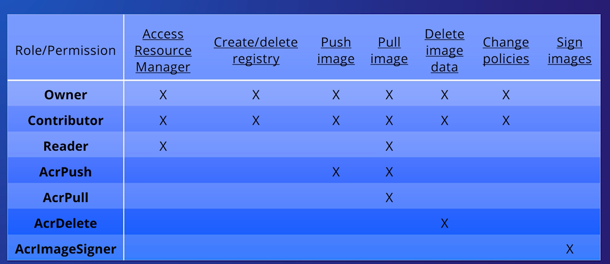

II. Platform protection
Sources of this notes
Summary: AZ-500 Microsoft Azure Security Engineer Certification
Cheatsheets: Azure-CLI | Azure PowerShell
100 questions you should pass for the AZ-500 certificate
This entire sections is about implementing security with a defense in depth approach in mind.

- Azure Network Security Groups can be used for basic layer 3 & 4 access controls between Azure Virtual Networks, their subnets, and the Internet.
- Application Security Groups enable you to define fine-grained network security policies based on workloads, centralized on applications, instead of explicit IP addresses.
- Azure Web Application Firewall and the Azure Firewall can be used for more advanced network access controls that require application layer support.
- Local Admin Password Solution (LAPS) or a third-party Privileged Access Management can set strong local admin passwords and just in time access to them.
1. Perimeter security
1.1. Azure networking components
Azure Virtual Networks are a key component of Azure security services. The Azure network infrastructure enables you to securely connect Azure resources to each other with virtual networks (VNets). A VNet is a representation of your own network in the cloud. A VNet is a logical isolation of the Azure cloud network dedicated to your subscription. You can connect VNets to your on-premises networks.
Azure supports dedicated WAN link connectivity to your on-premises network and an Azure Virtual Network with ExpressRoute. The link between Azure and your site uses a dedicated connection that does not go over the public Internet.
Virtual networks
Virtual networks in Azure are network overlays that you can use to configure and control the connectivity among Azure resources, such as VMs and load balancers. A virtual network is scoped to a single Azure region. Virtual networks are made up of subnets. A subnet is a range of IP addresses within your virtual network. Subnets, like virtual networks, are scoped to a single Azure region. You can implement multiple virtual networks within each Azure subscription and Azure region. Each virtual network is isolated from other virtual networks. For each virtual network you can: - Specify a custom private IP address space using public and private addresses. Azure assigns resources in a virtual network a private IP address from the address space that you assign. - Segment the virtual network into one or more subnets and allocate a portion of the virtual network's address space to each subnet. - Use Azure-provided name resolution, or specify your own DNS server, for use by resources in a virtual network.
IP addresses
VMs, Azure load balancers, and application gateways in a single virtual network require unique Internet Protocol (IP) addresses the same way that clients in an on-premises subnet do. This enables these resources to communicate with each other: - Private - A private IP address is dynamically or statically allocated to a VM from the defined scope of IP addresses in the virtual network. VMs use these addresses to communicate with other VMs in the same or connected virtual networks through a gateway / Azure ExpressRoute connection. These private IP addresses, or non-routable IP addresses, conform to RFC 1918. - Public - Public IP addresses, which allow Azure resources to communicate with external clients, are assigned directly at the virtual network adapter of the VM or to the load balancer. Public IP address can also be added to Azure-only virtual networks. All IP blocks in the virtual network will be routable only within the customer's network, and they won't be reachable from outside. Virtual network packets travel through the high-speed Azure backplane.
You can control the dynamic IP addresses assigned to VMs and cloud services within an Azure virtual network by specifying an IP addressing scheme.
Subnets
Each subnet contains a range of IP addresses that fall within the virtual network address space. Subnetting hides the details of internal network organization from external routers. Subnetting also segments the host within the network, making it easier to apply network security at the interconnections between subnets.
Network adapters
VMs communicate with other VMs and other resources on the network by using virtual network adapters. Virtual network adapters configure VMs with private and, optionally, public IP address. A VM can have more than one network adapter for different network configurations.
1.2. Azure Distributed Denial of Service (DDoS) Protection
Best practices for building DDoS-resilient services in Azure:
1. Ensure that security is a priority throughout the entire lifecycle of an application, from design and implementation to deployment and operations. Applications might have bugs that allow a relatively low volume of requests to use a lot of resources, resulting in a service outage.
For this, take into account these pillars: - Scalability - The ability of a system to handle increased load. - Availability - The proportion of time that a system is functional and working. - Resiliency - The ability of a system to recover from failures and continue to function. - Management - Operations processes that keep a system running in production. - Security - Protecting applications and data from threats
2. Design your applications to scale horizontally to meet the demands of an amplified load—specifically, in the event of a DDoS. If your application depends on a single instance of a service, it creates a single point of failure. Provisioning multiple instances makes your system more resilient and more scalable.
For this, these are valid ways to address it:
- For Azure App Service, select an App Service plan that offers multiple instances.
- For Azure Cloud Services, configure each of your roles to use multiple instances.
- For Azure Virtual Machines, ensure that your VM architecture includes more than one VM and that each VM is included in an availability set. We recommend using virtual machine scale sets for autoscaling capabilities.
3. Layer security defenses in an application to reduce the chance of a successful attack. Implement security-enhanced designs for your applications by using the built-in capabilities of the Azure platform.
This would be an approach to address it: Be aware that the risk of attack increases with the size, or surface area, of the application. You can reduce the surface area by using IP allowlists to close down the exposed IP address space and listening ports that aren’t needed on the load balancers (for Azure Load Balancer and Azure Application Gateway). You can also use NSGs to reduce the attack surface. You can use service tags and application security groups as a natural extension of an application’s structure to minimize complexity for creating security rules and configuring network security.
Configure a distributed denial of service protection implementation
Azure Distributed Denial of Service (DDoS) protection, combined with application design best practices, provide defense against DDoS attacks. Azure DDoS protection provides the following service tiers:
- Basic: Automatically enabled as part of the Azure platform. Always-on traffic monitoring, and real-time mitigation of common network-level attacks, provide the same defenses utilized by Microsoft's online services. The entire scale of Azure's global network can be used to distribute and mitigate attack traffic across regions. Protection is provided for IPv4 and IPv6 Azure public IP addresses.
- Standard: Provides additional mitigation capabilities over the Basic service tier that are tuned specifically to Azure Virtual Network resources. DDoS Protection Standard is simple to enable, and requires no application changes. Protection policies are tuned through dedicated traffic monitoring and machine learning algorithms. Policies are applied to public IP addresses associated to resources deployed in virtual networks, such as Azure Load Balancer, Azure Application Gateway, and Azure Service Fabric instances, but this protection does not apply to App Service Environments. Real-time telemetry is available through Azure Monitor views during an attack, and for history. Rich attack mitigation analytics are available via diagnostic settings. Application layer protection can be added through the Azure Application Gateway Web Application Firewall or by installing a 3rd party firewall from Azure Marketplace. Protection is provided for IPv4 and IPv6 Azure public IP addresses.

DDoS Protection Standard monitors actual traffic utilization and constantly compares it against the thresholds defined in the DDoS policy. When the traffic threshold is exceeded, DDoS mitigation is automatically initiated. When traffic returns to a level below the threshold, the mitigation is removed. During mitigation, DDoS Protection redirects traffic sent to the protected resource and performs several checks, including:
- Helping ensure that packets conform to internet specifications and aren’t malformed.
- Interacting with the client to determine if the traffic might be a spoofed packet (for example, using SYN Auth or SYN Cookie or dropping a packet for the source to retransmit it).
- Using rate-limit packets if it can’t perform any other enforcement meth
DDoS Protection blocks attack traffic and forwards the remaining traffic to its intended destination. Within a few minutes of attack detection, you’ll be notified with Azure Monitor metrics. By configuring logging on DDoS Protection Standard telemetry, you can write the logs to available options for future analysis. Azure Monitor retains metric data for DDoS Protection Standard for 30 days.
DDoS Protection Standard can mitigate the following types of attacks:
- Volumetric attacks: The attack's goal is to flood the network layer with a substantial amount of seemingly legitimate traffic. It includes UDP floods, amplification floods, and other spoofed-packet floods. DDoS Protection Standard mitigates these potential multi-gigabyte attacks by absorbing and scrubbing them, with Azure's global network scale, automatically.
- Protocol attacks: These attacks render a target inaccessible, by exploiting a weakness in the layer 3 and layer 4 protocol stack. It includes, SYN flood attacks, reflection attacks, and other protocol attacks. DDoS Protection Standard mitigates these attacks, differentiating between malicious and legitimate traffic, by interacting with the client, and blocking malicious traffic.
- Resource (application) layer attacks: These attacks target web application packets, to disrupt the transmission of data between hosts. The attacks include HTTP protocol violations, SQL injection, cross-site scripting, and other layer 7 attacks. Use a Web Application Firewall, such as the Azure Application Gateway web application firewall, as well as DDoS Protection Standard to provide defense against these attacks. There are also third-party web application firewall offerings available in the Azure Marketplace.
DDoS Protection Standard protects resources in a virtual network including public IP addresses associated with virtual machines, load balancers, and application gateways. When coupled with the Application Gateway web application firewall, or a third-party web application firewall deployed in a virtual network with a public IP, DDoS Protection Standard can provide full layer 3 to layer 7 mitigation capability.
1.3. Azure Firewall
Azure Firewall is a managed, cloud-based network security service that protects your Azure Virtual Network resources. It’s a fully stateful firewall-as-a-service with built-in high availability and unrestricted cloud scalability. By default, Azure Firewall blocks traffic.
- Built-in high availability - Because high availability is built in, no additional load balancers are required and there’s nothing you need to configure.
- Unrestricted cloud scalability - Azure Firewall can scale up as much as you need, to accommodate changing network traffic flows so you don't need to budget for your peak traffic.
- Application Fully Qualified Domain Name (FQDN) filtering rules - You can limit outbound HTTP/S traffic to a specified list of FQDNs, including wild cards. This feature does not require SSL termination.
- Network traffic filtering rules - You can centrally create allow or deny network filtering rules by source and destination IP address, port, and protocol. Azure Firewall is fully stateful, so it can distinguish legitimate packets for different types of connections. Rules are enforced and logged across multiple subscriptions and virtual networks.
- Qualified domain tags - Fully Qualified Domain Names (FQDN) tags make it easier for you to allow well known Azure service network traffic through your firewall. For example, say you want to allow Windows Update network traffic through your firewall. You create an application rule and include the Windows Update tag. Now network traffic from Windows Update can flow through your firewall.
- Outbound Source Network Address Translation (OSNAT) support - All outbound virtual network traffic IP addresses are translated to the Azure Firewall public IP. You can identify and allow traffic originating from your virtual network to remote internet destinations.
- Inbound Destination Network Address Translation (DNAT) support - Inbound network traffic to your firewall public IP address is translated and filtered to the private IP addresses on your virtual networks.
- Azure Monitor logging - All events are integrated with Azure Monitor, allowing you to archive logs to a storage account, stream events to your Event Hub, or send them to Azure Monitor logs.
Flow of rules for inbound traffic: Grouping the features above into logical groups reveals that Azure Firewall has three rule types: NAT rules, network rules, and application rules. Network rules are applied first, then application rules. Rules are terminating, which means if a match is found in network rules, then application rules are not processed. If there’s no network rule match, and if the packet protocol is HTTP/HTTPS, the packet is then evaluated by the application rules. If no match continues to be found, then the packet is evaluated against the infrastructure rule collection. If there’s still no match, then the packet is denied by default.
NAT rules - Inbound Destination Network Address Translation (DNAT). Filter inbound traffic with Azure Firewall DNAT using the Azure portal. DNAT rules are applied first. If a match is found, an implicit corresponding network rule to allow the translated traffic is added. You can override this behavior by explicitly adding a network rule collection with deny rules that match the translated traffic. No application rules are applied for these connections.
Network rules - Grant access from a virtual network. You can configure storage accounts to allow access only from specific VNets. You enable a service endpoint for Azure Storage within the VNet. This endpoint gives traffic an optimal route to the Azure Storage service. The identities of the virtual network and the subnet are also transmitted with each request. Administrators can then configure network rules for the storage account that allow requests to be received from specific subnets in the VNet. Each storage account supports up to 100 virtual network rules, which could be combined with IP network rules.
Application rules - Firewall rules to secure Azure Storage When network rules are configured, only applications requesting data from over the specified set of networks can access a storage account. An application that accesses a storage account when network rules are in effect requires proper authorization on the request. Authorization is supported with Azure AD credentials for blobs and queues, a valid account access key, or a SAS token. By default, storage accounts accept connections from clients on any network. To limit access to selected networks, you must first change the default action. Making changes to network rules can impact your applications' ability to connect to Azure Storage. Setting the default network rule to Deny blocks all access to the data unless specific network rules that grant access are also applied. Be sure to grant access to any allowed networks using network rules before you change the default rule to deny access.
Controlling outbound and inbound network access is an important part of an overall network security plan. Network traffic is subjected to the configured firewall rules when you route your network traffic to the firewall as the default gateway.
One way you can control outbound network access from an Azure subnet is with Azure Firewall. With Azure Firewall, you can configure:
- Application rules that define fully qualified domain names (FQDNs) that can be accessed from a subnet.
- Network rules that define source address, protocol, destination port, and destination address.
Fully Qualified Domain Name (FQDN) tag: An FQDN tag represents a group of fully qualified domain names (FQDNs) associated with well known Microsoft services. You can use an FQDN tag in application rules to allow the required outbound network traffic through your firewall.
Infrastructure qualified domain names: Azure Firewall includes a built-in rule collection for infrastructure FQDNs that are allowed by default. These FQDNs are specific for the platform and can't be used for other purposes. The following services are included in the built-in rule collection:
- Compute access to storage Platform Image Repository (PIR)
- Managed disks status storage access
- Azure Diagnostics and Logging (MDS)
You can monitor Azure Firewall using firewall logs. You can also use activity logs to audit operations on Azure Firewall resources. You can access some of these logs through the portal. Logs can be sent to Azure Monitor logs, Storage, and Event Hubs and analyzed in Azure Monitor logs or by different tools such as Excel and Power BI. Metrics are lightweight and can support near real-time scenarios making them useful for alerting and fast issue detection.
Threat intelligence-based filtering can be enabled for your firewall to alert and deny traffic from/to known malicious IP addresses and domains. The IP addresses and domains are sourced from the Microsoft Threat Intelligence feed. Intelligent Security Graph powers Microsoft threat intelligence and is used by multiple services including Microsoft Defender for Cloud. If you've enabled threat intelligence-based filtering, the associated rules are processed before any of the NAT rules, network rules, or application rules. You can choose to just log an alert when a rule is triggered, or you can choose alert and deny mode. By default, threat intelligence-based filtering is enabled in alert mode.
Rule processing logic: You can configure NAT rules, network rules, and applications rules on Azure Firewall. Rule collections are processed according to the rule type in priority order, lower numbers to higher numbers from 100 to 65,000. A rule collection name can have only letters, numbers, underscores, periods, or hyphens. It must begin with a letter or number, and end with a letter, number or underscore. The maximum name length is 80 characters.
Service tags represent a group of IP address prefixes to help minimize complexity for security rule creation. Microsoft manages the address prefixes encompassed by the service tag, and automatically updates the service tag as addresses change. Azure Firewall service tags can be used in the network rules destination field. You can use them in place of specific IP addresses.
Remote work support - Employees aren't protected by the layered security policies associated with on-premises services while working from home. Virtual Desktop Infrastructure (VDI) deployments on Azure can help organizations rapidly respond to this changing environment. However, you need a way to protect inbound/outbound Internet access to and from these VDI deployments. You can use Azure Firewall DNAT rules along with its threat intelligence-based filtering capabilities to protect your VDI deployments. Azure Virtual Desktop is a comprehensive desktop and app virtualization service running in Azure. It’s the only virtual desktop infrastructure (VDI) that delivers simplified management, multi-session Windows 10, optimizations for Microsoft 365 ProPlus, and support for Remote Desktop Services (RDS) environments.
1.4. Configure VPN forced tunneling
You configure forced tunneling in Azure via virtual network User Defined Routes (UDR). Redirecting traffic to an on-premises site is expressed as a default route to the Azure VPN gateway. This example uses UDRs to create a routing table to first add a default route and then associate the routing table with your virtual network subnets to enable forced tunneling on those subnets.
1.5. Create User Defined Routes and Network Virtual Appliances
A User Defined Routes (UDR) is a custom route in Azure that overrides Azure's default system routes or adds routes to a subnet's route table. In Azure, you create a route table and then associate that route table with zero or more virtual network subnets.

2. Network security
2.1. Network Security Groups (NSG)
Network traffic can be filtered to and from Azure resources in an Azure virtual network with a network security group. A network security group contains security rules that allow or deny inbound network traffic to, or outbound network traffic from, several types of Azure resources. For each rule, you can specify source and destination, port, and protocol.
NSGs control inbound and outbound traffic passing through a network adapter (in the Resource Manager deployment model), a VM (in the classic deployment model), or a subnet (in both deployment models).
Network Security Group rules
- Name. This is a unique identifier for the rule.
- Direction. This specifies whether the traffic is inbound or outbound.
- Priority. If multiple rules match the traffic, rules with a higher priority apply.
- Access. This specifies whether the traffic is allowed or denied.
- Source IP address prefix. This prefix identifies where the traffic originated from. It can be based on a single IP address; a range of IP addresses in Classless Interdomain Routing (CIDR) notation; or the asterisk (*), which is a wildcard that matches all possible IP addresses.
- Source port range. This specifies source ports by using either a single port number from 1 through 65,535; a range of ports (for example, 200–400); or the asterisk (*) to denote all possible ports.
- Destination IP address prefix. This identifies the traffic destination based on a single IP address, a range of IP addresses in CIDR notation, or the asterisk (*) to match all possible IP addresses.
- Destination port range. This specifies destination ports by using either a single port number from 1 through 65,535; a range of ports (for example, 200–400); or the asterisk (*) to denote all possible ports.
- Protocol. This specifies a protocol that matches the rule. It can be UDP, TCP, or the asterisk (*).
Predefined default rules exist for inbound and outbound traffic. You can’t delete these rules, but you can override them, because they have the lowest priority.
The default rules allow all inbound and outbound traffic within a virtual network, allow outbound traffic towards the internet, and allow inbound traffic to an Azure load balancer.
When you create a custom rule, you can use default tags in the source and destination IP address prefixes to specify predefined categories of IP addresses. These default tags are:
- Internet. This tag represents internet IP addresses.
- Virtual_network. This tag identifies all IP addresses that the IP range for the virtual network defines. It also includes IP address ranges from on-premises networks when they are defined as local network to virtual network.
- Azure_loadbalancer. This tag specifies the default Azure load balancer destination.
You can design NSGs to isolate virtual networks in security zones, like the model used by on-premises infrastructure does. You can apply NSGs to subnets, which allows you to create protected screened subnets, or DMZs, that can restrict traffic flow to all the machines residing within that subnet. With the classic deployment model, you can also assign NSGs to individual computers to control traffic that is both destined for and leaving the VM. With the Resource Manager deployment model, you can assign NSGs to a network adapter so that NSG rules control only the traffic that flows through that network adapter. If the VM has multiple network adapters, NSG rules won’t automatically be applied to traffic that is designated for other network adapters.
Network Security Group limitations
When implementing NSGs, these are the limits to keep in mind:
- By default, you can create 100 NSGs per region per subscription. You can raise this limit to 400 by contacting Azure support.
- You can apply only one NSG to a VM, subnet, or network adapter.
- By default, you can have up to 200 rules in a single NSG. You can raise this limit to 500 by contacting Azure support.
- You can apply an NSG to multiple resources.
An individual subnet can have zero, or one, associated NSG. An individual network interface can also have zero, or one, associated NSG. So, you can effectively have dual traffic restriction for a virtual machine by associating an NSG first to a subnet, and then another NSG to the VM's network interface.
Consider a simple example with one virtual machine as follows:
- The virtual machine is placed inside the Contoso Subnet.
- Contoso Subnet is associated with Subnet NSG.
-
The VM network interface is additionally associated with VM NSG.

In this example, for inbound traffic, the Subnet NSG is evaluated first. Any traffic allowed through Subnet NSG is then evaluated by VM NSG. The reverse is applicable for outbound traffic, with VM NSG being evaluated first. Any traffic allowed through VM NSG is then evaluated by Subnet NSG.
2.2. Application Security Groups
In this topic we look at Application Security Groups (ASGs), which are built on network security groups. ASGs enable you to configure network security as a natural extension of an application's structure. You then can group VMs and define network security policies based on those groups.
The rules that specify an ASG as the source or destination are only applied to the network interfaces that are members of the ASG. If the network interface is not a member of an ASG, the rule is not applied to the network interface even though the network security group is associated to the subnet.
Application security groups have the following constraints
- There are limits to the number of ASGs you can have in a subscription, in addition to other limits related to ASGs.
- You can specify one ASG as the source and destination in a security rule. You cannot specify multiple ASGs in the source or destination.
- All network interfaces assigned to an ASG must exist in the same virtual network that the first network interface assigned to the ASG is in. For example, if the first network interface assigned to an ASG named AsgWeb is in the virtual network named VNet1, then all subsequent network interfaces assigned to ASGWeb must exist in VNet1. You cannot add network interfaces from different virtual networks to the same ASG.
- If you specify an ASG as the source and destination in a security rule, the network interfaces in both ASGs must exist in the same virtual network. For example, if AsgLogic contained network interfaces from VNet1, and AsgDb contained network interfaces from VNet2, you could not assign AsgLogic as the source and AsgDb as the destination in a rule. All network interfaces for both the source and destination ASGs need to exist in the same virtual network.
2.3. Service Endpoints
A virtual network service endpoint provides the identity of your virtual network to the Azure service. Once service endpoints are enabled in your virtual network, you can secure Azure service resources to your virtual network by adding a virtual network rule to the resources.
Today, Azure service traffic from a virtual network uses public IP addresses as source IP addresses. With service endpoints, service traffic switches to use virtual network private addresses as the source IP addresses when accessing the Azure service from a virtual network. This switch allows you to access the services without the need for reserved, public IP addresses used in IP firewalls.
Why use a service endpoint?
- Improved security for your Azure service resources. Once service endpoints are enabled in your virtual network, you can secure Azure service resources to your virtual network by adding a virtual network rule to the resources. This provides improved security by fully removing public Internet access to resources, and allowing traffic only from your virtual network.
- Optimal routing for Azure service traffic from your virtual network. Today, any routes in your virtual network that force Internet traffic to your premises and/or virtual appliances, known as forced-tunneling, also force Azure service traffic to take the same route as the Internet traffic. Service endpoints provide optimal routing for Azure traffic.
- Endpoints always take service traffic directly from your virtual network to the service on the Microsoft Azure backbone network. Keeping traffic on the Azure backbone network allows you to continue auditing and monitoring outbound Internet traffic from your virtual networks, through forced-tunneling, without impacting service traffic.
- Simple to set up with less management overhead. You no longer need reserved, public IP addresses in your virtual networks to secure Azure resources through IP firewall. There are no NAT or gateway devices required to set up the service endpoints. Service endpoints are configured through a simple click on a subnet. There is no additional overhead to maintaining the endpoints.
Scenarios
- Peered, connected, or multiple virtual networks: To secure Azure services to multiple subnets within a virtual network or across multiple virtual networks, you can enable service endpoints on each of the subnets independently, and secure Azure service resources to all of the subnets.
- Filtering outbound traffic from a virtual network to Azure services: If you want to inspect or filter the traffic sent to an Azure service from a virtual network, you can deploy a network virtual appliance within the virtual network. You can then apply service endpoints to the subnet where the network virtual appliance is deployed, and secure Azure service resources only to this subnet. This scenario might be helpful if you want use network virtual appliance filtering to restrict Azure service access from your virtual network only to specific Azure resources.
- Securing Azure resources to services deployed directly into virtual networks: You can directly deploy various Azure services into specific subnets in a virtual network. You can secure Azure service resources to managed service subnets by setting up a service endpoint on the managed service subnet.
- Disk traffic from an Azure virtual machine: Virtual Machine Disk traffic for managed and unmanaged disks isn't affected by service endpoints routing changes for Azure Storage. This traffic includes diskIO as well as mount and unmount. You can limit REST access to page blobs to select networks through service endpoints and Azure Storage network rules.
2.4. Private links
Azure Private Link works on an approval call flow model wherein the Private Link service consumer can request a connection to the service provider for consuming the service. The service provider can then decide whether to allow the consumer to connect or not. Azure Private Link enables the service providers to manage the private endpoint connection on their resources

There are two connection approval methods that a Private Link service consumer can choose from:
- Automatic: If the service consumer has RBAC permissions on the service provider resource, the consumer can choose the automatic approval method. In this case, when the request reaches the service provider resource, no action is required from the service provider and the connection is automatically approved.
- Manual: On the contrary, if the service consumer doesn’t have RBAC permissions on the service provider resource, the consumer can choose the manual approval method. In this case, the connection request appears on the service resources as Pending. The service provider has to manually approve the request before connections can be established. In manual cases, service consumer can also specify a message with the request to provide more context to the service provider.
he service provider has following options to choose from for all Private Endpoint connections:
- Approved
- Reject
- Remove
Portal is the preferred method for managing private endpoint connections on Azure PaaS resources.
2.5. Azure application gateway
Azure Application Gateway is a web traffic load balancer that enables you to manage traffic to your web applications. Traditional load balancers operate at the transport layer (OSI layer 4 - TCP and UDP) and route traffic based on the source IP address and port to a destination IP address and port.
Application Gateway can make routing decisions based on additional attributes of an HTTP request, for example, URI path or host headers. For example, you can route traffic based on the incoming URL. So if /images are in the incoming URL, you can route traffic to a specific set of servers (known as a pool) configured for images. If /video is in the URL, that traffic is routed to another pool that's optimized for videos. This type of routing is known as application layer (OSI layer 7) load balancing.
Application Gateway includes the following features:
- Secure Sockets Layer (SSL/TLS) termination - Application gateway supports SSL/TLS termination at the gateway, after which traffic typically flows unencrypted to the backend servers. This feature allows web servers to be unburdened from costly encryption and decryption overhead.
- Autoscaling - Application Gateway Standard_v2 supports autoscaling and can scale up or down based on changing traffic load patterns. Autoscaling also removes the requirement to choose a deployment size or instance count during provisioning.
- Zone redundancy - A Standard_v2 Application Gateway can span multiple Availability Zones, offering better fault resiliency and removing the need to provision separate Application Gateways in each zone.
- Static VIP - The application gateway Standard_v2 SKU supports static VIP type exclusively. This ensures that the VIP associated with application gateway doesn't change even over the lifetime of the Application Gateway.
- Web Application Firewall - Web Application Firewall (WAF) is a service that provides centralized protection of your web applications from common exploits and vulnerabilities. WAF is based on rules from the OWASP (Open Web Application Security Project) core rule sets 3.1 (WAF_v2 only), 3.0, and 2.2.9.
- Ingress Controller for AKS - Application Gateway Ingress Controller (AGIC) allows you to use Application Gateway as the ingress for an Azure Kubernetes Service (AKS) cluster.
- URL-based routing - URL Path Based Routing allows you to route traffic to back-end server pools based on URL Paths of the request. One of the scenarios is to route requests for different content types to different pool.
- Multiple-site hosting - Multiple-site hosting enables you to configure more than one web site on the same application gateway instance. This feature allows you to configure a more efficient topology for your deployments by adding up to 100 web sites to one Application Gateway (for optimal performance).
- Redirection - A common scenario for many web applications is to support automatic HTTP to HTTPS redirection to ensure all communication between an application and its users occurs over an encrypted path.
- Session affinity - The cookie-based session affinity feature is useful when you want to keep a user session on the same server.
- Websocket and HTTP/2 traffic - Application Gateway provides native support for the WebSocket and HTTP/2 protocols. There's no user-configurable setting to selectively enable or disable WebSocket support.
- Connection draining - Connection draining helps you achieve graceful removal of backend pool members during planned service updates.
- Custom error pages - Application Gateway allows you to create custom error pages instead of displaying default error pages. You can use your own branding and layout using a custom error page.
- Rewrite HTTP headers - HTTP headers allow the client and server to pass additional information with the request or the response.
- Sizing - Application Gateway Standard_v2 can be configured for autoscaling or fixed size deployments. This SKU doesn't offer different instance sizes.
New Application Gateway v1 SKU deployments can take up to 20 minutes to provision. Changes to instance size or count aren't disruptive, and the gateway remains active during this time.
Most deployments that use the v2 SKU take around 6 minutes to provision. However it can take longer depending on the type of deployment. For example, deployments across multiple Availability Zones with many instances can take more than 6 minutes.
2.6. Web Application Firewall
Web Application Firewall (WAF) provides centralized protection of your web applications from common exploits and vulnerabilities. Web applications are increasingly targeted by malicious attacks that exploit commonly known vulnerabilities. SQL injection and cross-site scripting are among the most common attacks.
WAF can be deployed with Azure Application Gateway, Azure Front Door, and Azure Content Delivery Network (CDN) service from Microsoft. WAF on Azure CDN is currently under public preview. WAF has features that are customized for each specific service.
2.7. Azure Front Door
Azure Front Door enables you to define, manage, and monitor the global routing for your web traffic by optimizing for best performance and instant global failover for high availability. With Front Door, you can transform your global (multi-region) consumer and enterprise applications into robust, high-performance personalized modern applications, APIs, and content that reaches a global audience with Azure.
Front Door works at Layer 7 or HTTP/HTTPS layer and uses split TCP-based anycast protocol.
The following features are included with Front Door:
- Accelerate application performance - Using split TCP-based anycast protocol, Front Door ensures that your end users promptly connect to the nearest Front Door POP (Point of Presence).
- Increase application availability with smart health probes - Front Door delivers high availability for your critical applications using its smart health probes, monitoring your backends for both latency and availability and providing instant automatic failover when a backend goes down.
- URL-based routing - URL Path Based Routing allows you to route traffic to backend pools based on URL paths of the request. One of the scenarios is to route requests for different content types to different backend pools.
- Multiple-site hosting - Multiple-site hosting enables you to configure more than one web site on the same Front Door configuration.
- Session affinity - The cookie-based session affinity feature is useful when you want to keep a user session on the same application backend.
- TLS termination - Front Door supports TLS termination at the edge that is, individual users can set up a TLS connection with Front Door environments instead of establishing it over long haul connections with the application backend.
- Custom domains and certificate management - When you use Front Door to deliver content, a custom domain is necessary if you would like your own domain name to be visible in your Front Door URL.
- Application layer security - Azure Front Door allows you to author custom Web Application Firewall (WAF) rules for access control to protect your HTTP/HTTPS workload from exploitation based on client IP addresses, country code, and http parameters.
- URL redirection - With the strong industry push on supporting only secure communication, web applications are expected to automatically redirect any HTTP traffic to HTTPS.
- URL rewrite - Front Door supports URL rewrite by allowing you to configure an optional Custom Forwarding Path to use when constructing the request to forward to the backend.
- Protocol support - IPv6 and HTTP/2 traffic - Azure Front Door natively supports end-to-end IPv6 connectivity and HTTP/2 protocol.
As mentioned above, routing to the Azure Front Door environments leverages Anycast for both DNS (Domain Name System) and HTTP (Hypertext Transfer Protocol) traffic, so user traffic will go to the closest environment in terms of network topology (fewest hops). This architecture typically offers better round-trip times for end users (maximizing the benefits of Split TCP). Front Door organizes its environments into primary and fallback "rings". The outer ring has environments that are closer to users, offering lower latencies. The inner ring has environments that can handle the failover for the outer ring environment in case an issue happens. The outer ring is the preferred target for all traffic, but the inner ring is necessary to handle traffic overflow from the outer ring. In terms of VIPs (Virtual Internet Protocol addresses), each frontend host, or domain served by Front Door is assigned a primary VIP, which is announced by environments in both the inner and outer ring, as well as a fallback VIP, which is only announced by environments in the inner ring.
2.8. ExpressRoute
ExpressRoute is a direct, private connection from your WAN (not over the public Internet) to Microsoft Services, including Azure. Site-to-Site VPN traffic travels encrypted over the public Internet. Being able to configure Site-to-Site VPN and ExpressRoute connections for the same virtual network has several advantages.
You can configure a Site-to-Site VPN as a secure failover path for ExpressRoute, or use Site-to-Site VPNs to connect to sites that are not part of your network, but that are connected through ExpressRoute. Notice that this configuration requires two virtual network gateways for the same virtual network, one using the gateway type 'Vpn', and the other using the gateway type 'ExpressRoute'.

IPsec over ExpressRoute for Virtual WAN
Azure Virtual WAN uses an Internet Protocol Security (IPsec) Internet Key Exchange (IKE) VPN connection from your on-premises network to Azure over the private peering of an Azure ExpressRoute circuit. This technique can provide an encrypted transit between the on-premises networks and Azure virtual networks over ExpressRoute, without going over the public internet or using public IP addresses. The following diagram shows an example of VPN connectivity over ExpressRoute private peering.

An important aspect of this configuration is routing between the on-premises networks and Azure over both the ExpressRoute and VPN paths. An important aspect of this configuration is routing between the on-premises networks and Azure over both the ExpressRoute and VPN paths.
Point-to-point encryption by MACsec -. MACsec is an IEEE standard. It encrypts data at the Media Access control (MAC) level or Network Layer 2. You can use MACsec to encrypt the physical links between your network devices and Microsoft's network devices when you connect to Microsoft via ExpressRoute Direct. MACsec is disabled on ExpressRoute Direct ports by default. You bring your own MACsec key for encryption and store it in Azure Key Vault. You decide when to rotate the key.
End-to-end encryption by IPsec and MACsec. - IPsec is an IETF standard. It encrypts data at the Internet Protocol (IP) level or Network Layer 3. You can use IPsec to encrypt an end-to-end connection between your on-premises network and your virtual network (VNET) on Azure. MACsec secures the physical connections between you and Microsoft. IPsec secures the end-to-end connection between you and your virtual networks on Azure. You can enable them independently.
ExpressRoute Direct gives you the ability to connect directly into Microsoft’s global network at peering locations strategically distributed across the world. ExpressRoute Direct provides dual 100 Gbps or 10 Gbps connectivity, which supports Active/Active connectivity at scale
Key features that ExpressRoute Direct provides include, but aren't limited to:
- Massive Data Ingestion into services like Storage and Cosmos DB
- Physical isolation for industries that are regulated and require dedicated and isolated connectivity like: Banking, Government, and Retail
- Granular control of circuit distribution based on business unit
ExpressRoute Direct supports massive data ingestion scenarios into Azure storage and other big data services. ExpressRoute circuits on 100 Gbps ExpressRoute Direct now also support 40 Gbps and 100 Gbps circuit SKUs. The physical port pairs are 100 or 10 Gbps only and can have multiple virtual circuits.
ExpressRoute Direct supports both QinQ and Dot1Q VLAN tagging.
- QinQ VLAN Tagging allows for isolated routing domains on a per ExpressRoute circuit basis. Azure dynamically allocates an S-Tag at circuit creation and cannot be changed. Each peering on the circuit (Private and Microsoft) will utilize a unique C-Tag as the VLAN. The C-Tag is not required to be unique across circuits on the ExpressRoute Direct ports.
- Dot1Q VLAN Tagging allows for a single tagged VLAN on a per ExpressRoute Direct port pair basis. A C-Tag used on a peering must be unique across all circuits and peerings on the ExpressRoute Direct port pair.
ExpressRoute Direct provides the same enterprise-grade SLA with Active/Active redundant connections into the Microsoft Global Network. ExpressRoute infrastructure is redundant and connectivity into the Microsoft Global Network is redundant and diverse and scales accordingly with customer requirements.
3. Host security
3.1. Endpoint protection
Microsoft Defender for Endpoint is an enterprise endpoint security platform designed to help enterprise networks prevent, detect, investigate, and respond to advanced threats.
The capabilities on non-Windows platforms may be different from the ones for Windows.
Defender for Endpoint uses the following combination of technology built into Windows 10 and Microsoft's robust cloud service:
- Endpoint behavioral sensors: Embedded in Windows 10, these sensors collect and process behavioral signals from the operating system and send this sensor data to your private, isolated cloud instance of Microsoft Defender for Endpoint.
- Cloud security analytics: Leveraging big data, device learning, and unique Microsoft optics across the Windows ecosystem, enterprise cloud products (such as Office 365), and online assets, behavioral signals are translated into insights, detections, and recommended responses to advanced threats.
- Threat intelligence: Generated by Microsoft hunters, security teams, and augmented by threat intelligence provided by partners, threat intelligence enables Defender for Endpoint to identify attacker tools, techniques, and procedures and generate alerts when they are observed in collected sensor data.
Some features of Microsoft Defender for Endpoint:
Core Defender Vulnerability Management - Built-in core vulnerability management capabilities use a modern risk-based approach to the discovery, assessment, prioritization, and remediation of endpoint vulnerabilities and misconfigurations.
Attack surface reduction - The attack surface reduction set of capabilities provides the first line of defense in the stack. By ensuring configuration settings are properly set and exploit mitigation techniques are applied, the capabilities resist attacks and exploitation. This set of capabilities also includes network protection and web protection, which regulate access to malicious IP addresses, domains, and URLs.
Next-generation protection - To further reinforce the security perimeter of your network, Microsoft Defender for Endpoint uses next-generation protection designed to catch all types of emerging threats.
Endpoint detection and response - Endpoint detection and response capabilities are put in place to detect, investigate, and respond to advanced threats that may have made it past the first two security pillars. Advanced hunting provides a query-based threat-hunting tool that lets you proactively find breaches and create custom detections.
Automated investigation and remediation - In conjunction with being able to quickly respond to advanced attacks, Microsoft Defender for Endpoint offers automatic investigation and remediation capabilities that help reduce the volume of alerts in minutes at scale.
Microsoft Secure Score for Devices - Defender for Endpoint includes Microsoft Secure Score for Devices to help you dynamically assess the security state of your enterprise network, identify unprotected systems, and take recommended actions to improve the overall security of your organization.
Microsoft Threat Experts - Microsoft Defender for Endpoint's new managed threat hunting service provides proactive hunting, prioritization, and additional context and insights that further empower Security operation centers (SOCs) to identify and respond to threats quickly and accurately.
Defender for Endpoint customers need to apply for the Microsoft Threat Experts managed threat hunting service to get proactive Targeted Attack Notifications and to collaborate with experts on demand.
Centralized configuration and administration, APIs - Integrate Microsoft Defender for Endpoint into your existing workflows.
Integration with Microsoft solutions - Defender for Endpoint directly integrates with various Microsoft solutions, including:
- Microsoft Defender for Cloud
- Microsoft Sentinel
- Intune
- Microsoft Defender for Cloud Apps
- Microsoft Defender for Identity
- Microsoft Defender for Office
- Skype for Business
Microsoft 365 Defender - With Microsoft 365 Defender, Defender for Endpoint, and various Microsoft security solutions, form a unified pre- and post-breach enterprise defense suite that natively integrates across endpoint, identity, email, and applications to detect, prevent, investigate, and automatically respond to sophisticated attack
3.2. Privileged Access Device
Zero Trust, means that you don't purchase from generic retailers but only supply hardware from an authorized OEM that support Autopilot.
For this solution, root of trust will be deployed using Windows Autopilot technology with hardware that meets the modern technical requirements. To secure a workstation, Autopilot lets you leverage Microsoft OEM-optimized Windows 10 devices. These devices come in a known good state from the manufacturer. Instead of reimaging a potentially insecure device, Autopilot can transform a Windows 10 device into a “business-ready” state. It applies settings and policies, installs apps, and even changes the edition of Windows 10.
To have a secured workstation you need to make sure the following security technologies are included on the device:
- Trusted Platform Module (TPM) 2.0
- BitLocker Drive Encryption
- UEFI Secure Boot
- Drivers and Firmware Distributed through Windows Update
- Virtualization and HVCI Enabled
- Drivers and Apps HVCI-Ready
- Windows Hello
- DMA I/O Protection
- System Guard
- Modern Standby
Levels of device security
| Device Type | Common usage scenario | Permitted activities | Security guidance |
|---|---|---|---|
| Enterprise Device | Home users, small business users, general purpose developers, and enterprise | Run any application, browse any website | Anti-malware and virus protection and policy based security posture for the enterprise. |
| Specialized Device | Specialized or secure enterprise users | Run approved applications, but cannot install apps. Email and web browsing allowed. No admin controls | No self administration of device, no application installation, policy based security, and endpoint management |
| Privileged Device | Extremely sensitive roles | IT Operations | No local admins, no productivity tools, locked down browsing. PAW device |
This chart shows the level of device security controls based on how the device will be used.

A secure workstation requires it be part of an end-to-end approach including device security, account security, and security policies applied to the device at all times. Here are some common security measures you should consider implementing based on the users' needs.
| Security Control | Enterprise Device | Specialized Device | Privileged Device |
|---|---|---|---|
| Microsoft Endpoint Manager (MEM) managed | Yes | Yes | Yes |
| Deny BYOD Device enrollment | No | Yes | Yes |
| MEM security baseline applied | Yes | Yes | Yes |
| Microsoft Defender for Endpoint | Yes | Yes | Yes |
| Join personal device via Autopilot | Yes | Yes | No |
| URLs restricted to approved list | Allow Most | Allow Most | Deny Default |
| Removal of admin rights | Yes | Yes | |
| Application execution control (AppLocker) | Audit -> Enforced | Yes | |
| Applications installed only by MEM | Yes | Yes |
3.3. Privileged Access Workstations (PAW workstations)
PAW is a hardened and locked down workstation designed to provide high security assurances for sensitive accounts and tasks. PAWs are recommended for administration of identity systems, cloud services, and private cloud fabric as well as sensitive business functions. In order to provide the greatest security, PAWs should always run the most up-to-date and secure operating system available: Microsoft strongly recommends Windows 10 Enterprise, which includes several additional security features not available in other editions (in particular, Credential Guard and Device Guard).
- Internet attacks - Isolating the PAW from the open internet is a key element to ensuring the PAW is not compromised.
- Usability risk - If a PAW is too difficult to use for daily tasks, administrators will be motivated to create workarounds to make their jobs easier.
- Environment risks - Minimizing the use of management tools and accounts that have access to the PAWs to secure and monitor these specialized workstations.
- Supply chain tampering - Taking a few key actions can mitigate critical attack vectors that are readily available to attackers. This includes validating the integrity of all installation media (Clean Source Principle) and using a trusted and reputable supplier for hardware and software.
- Physical attacks - Because PAWs can be physically mobile and used outside of physically secure facilities, they must be protected against attacks that leverage unauthorized physical access to the computer.
This methodology is appropriate for accounts with access to high value assets:
- Administrative Privileges - PAWs provide increased security for high impact IT administrative roles and tasks. This architecture can be applied to administration of many types of systems including Active Directory Domains and Forests, Microsoft Entra tenants, Microsoft 365 tenants, Process Control Networks (PCN), Supervisory Control and Data Acquisition (SCADA) systems, Automated Teller Machines (ATMs), and Point of Sale (PoS) devices.
- High Sensitivity Information workers - The approach used in a PAW can also provide protection for highly sensitive information worker tasks and personnel such as those involving pre-announcement Merger and Acquisition activity, pre-release financial reports, organizational social media presence, executive communications, unpatented trade secrets, sensitive research, or other proprietary or sensitive data. This guidance does not discuss the configuration of these information worker scenarios in depth or include this scenario in the technical instructions.
Administrative "Jump Box" architectures set up a small number administrative console servers and restrict personnel to using them for administrative tasks. This is typically based on remote desktop services, a 3rd-party presentation virtualization solution, or a Virtual Desktop Infrastructure (VDI) technology.
3.4. Virtual Machine templates
Here are some additional terms to know when using Resource Manager:
- Resource provider. A service that supplies Azure resources. For example, a common resource provider is Microsoft.Compute, which supplies the VM resource. Microsoft.Storage is another common resource provider.
- Resource Manager template. A JSON file that defines one or more resources to deploy to a resource group or subscription. You can use the template to consistently and repeatedly deploy the resources.
- Declarative syntax. Syntax that lets you state, "Here’s what I intend to create" without having to write the sequence of programming commands to create it. The Resource Manager template is an example of declarative syntax. In the file, you define the properties for the infrastructure to deploy to Azure.
When you deploy a template, Resource Manager converts the template into REST API operations.
Here two different deployment schemas with same result:


3.5. Remote Access Management: RDP, ssh, and Azure Bastion
This topic explains how to connect to and sign into the virtual machines (VMs) you created on Azure. Once you've successfully connected, you can work with the VM as if you were locally logged on to its host server.
Connect to a Windows VM - With rdp, with ssh or with Azure Bastion Service. The Azure Bastion service is a fully platform-managed PaaS service that you provision inside your virtual network. It provides secure and seamless RDP/SSH connectivity to your virtual machines directly in the Azure portal over TLS. The Azure Bastion service is a fully platform-managed PaaS service that you provision inside your virtual network. It provides secure and seamless RDP/SSH connectivity to your virtual machines directly in the Azure portal over TLS. Bastion provides secure RDP and SSH connectivity to all the VMs in the virtual network in which it is provisioned. Using Azure Bastion protects your virtual machines from exposing RDP/SSH ports to the outside world, while still providing secure access using RDP/SSH. With Azure Bastion, you connect to the virtual machine directly from the Azure portal.

Benefits of Bastion
You can deploy bastion hosts (also known as jump-servers) at the public side of your perimeter network. Bastion host servers are designed and configured to withstand attacks. Bastion servers also provide RDP and SSH connectivity to the workloads sitting behind the bastion, as well as further inside the network.
No hassle of managing NSGs: Azure Bastion is a fully managed platform PaaS service from Azure that is hardened internally to provide you secure RDP/SSH connectivity. You don't need to apply any NSGs on Azure Bastion subnet. Because Azure Bastion connects to your virtual machines over private IP, you can configure your NSGs to allow RDP/SSH from Azure Bastion only.
Protection against port scanning: Because you do not need to expose your virtual machines to public Internet, your VMs are protected against port scanning by rogue and malicious users located outside your virtual network.
Protect against zero-day exploits. Hardening in one place only: Azure Bastion is a fully platform-managed PaaS service. Because it sits at the perimeter of your virtual network, you don’t need to worry about hardening each of the virtual machines in your virtual network.
3.6. Update Management
Azure Update Management is a service included as part of your Azure subscription. With Update Management, you can assess your update status across your environment and manage your Windows Server and Linux server updates from a single location—for both your on-premises and Azure environments.
Update Management is available at no additional cost (you pay only for the log data that Azure Log Analytics stores), and you can easily enable it for Azure and on-premises VMs. You can also enable Update Management for VMs directly from your Azure Automation account.
Configurations on managed computers:
- Microsoft Monitoring Agent (MMA) for Windows or Linux.
- Desired State Configuration (DSC) in Windows PowerShell for Linux.
- Hybrid Runbook Worker in Azure Automation.
- Microsoft Update or Windows Server Update Services (WSUS) for Windows computers.
Azure Automation uses runbooks to install updates. When an update deployment is created, it creates a schedule that starts a master update runbook at the specified time for the included computers. The master runbook starts a child runbook on each agent to install the required updates.
The Log Analytics agent for Windows and Linux needs to be installed on the VMs that are running on your corporate network or other cloud environment in order to enable them with Update Management.
From your Azure Automation account, you can:
- Onboard virtual machines
- Assess the status of available updates
- Schedule installation of required updates
- Review deployment results to verify that updates were applied successfully to all virtual machines for which Update Management is enabled
Azure Update Management provides the ability to deploy patches based on classifications. However, there are scenarios where you may want to explicitly list the exact set of patches. With update inclusion lists you can choose exactly which patches you want to deploy instead of relying on patch classifications.
3.7. Disk encryption
WINDOWS
Azure Disk Encryption for Windows VMs helps protect and safeguard your data to meet your organizational security and compliance commitments. It uses the BitLocker feature of Windows to provide volume encryption for the OS and data disks of Azure virtual machines (VMs), and is integrated with Azure Key Vault to help you control and manage the disk encryption keys and secrets. Azure Disk Encryption is zone resilient, the same way as Virtual Machines.
Supported VMs. - Azure Disk Encryption is supported on Generation 1 and Generation 2 VMs. Azure Disk Encryption is also available for VMs with premium storage. Azure Disk Encryption is not available on Basic, A-series VMs, or on virtual machines with less than 2 GB of memory.
Supported operating systems. -
- Windows client: Windows 8 and later.
- Windows Server: Windows Server 2008 R2 and later.
- Windows 10 Enterprise multi-session.
To enable Azure Disk Encryption, the VMs must meet the following network endpoint configuration requirements:
- To get a token to connect to your key vault, the Windows VM must be able to connect to a Microsoft Entra endpoint, [login.microsoftonline.com].
- To write the encryption keys to your key vault, the Windows VM must be able to connect to the key vault endpoint.
- The Windows VM must be able to connect to an Azure storage endpoint that hosts the Azure extension repository and an Azure storage account that hosts the VHD files.
- If your security policy limits access from Azure VMs to the Internet, you can resolve the preceding URI and configure a specific rule to allow outbound connectivity to the IPs.
Group Policy requirements. - Azure Disk Encryption uses the BitLocker external key protector for Windows VMs. For domain joined VMs, don't push any group policies that enforce TPM protectors. BitLocker policy on domain joined virtual machines with custom group policy must include the following setting: Configure user storage of BitLocker recovery information -> Allow 256-bit recovery key. Azure Disk Encryption will fail when custom group policy settings for BitLocker are incompatible. On machines that didn't have the correct policy setting, apply the new policy, force the new policy to update (gpupdate.exe /force), and then restarting may be required. Azure Disk Encryption will fail if domain level group policy blocks the AES-CBC algorithm, which is used by BitLocker.
Encryption key storage requirements. - Azure Disk Encryption requires an Azure Key Vault to control and manage disk encryption keys and secrets. Your key vault and VMs must reside in the same Azure region and subscription.
LINUX
Supported VMs. - Azure Disk Encryption is supported on Generation 1 and Generation 2 VMs. Azure Disk Encryption is also available for VMs with premium storage.
Note: Azure Disk Encryption is not available on Basic, A-series VMs, or on virtual machines that do not meet these minimum memory requirements:
| Virtual machine | Minimum memory requirement |
|---|---|
| Linux VMs when only encrypting data volumes | 2 GB |
| Linux VMs when encrypting both data and OS volumes, and where the root (/) file system usage is 4GB or less | 8 GB |
| Linux VMs when encrypting both data and OS volumes, and where the root (/) file system usage is greater than 4GB | The root file system usage * 2. For instance, a 16 GB of root file system usage requires at least 32GB of RAM |
Once the OS disk encryption process is complete on Linux virtual machines, the VM can be configured to run with less memory.
Azure Disk Encryption requires the dm-crypt and vfat modules to be present on the system. Removing or disabling vfat from the default image will prevent the system from reading the key volume and obtaining the key needed to unlock the disks on subsequent reboots. System hardening steps that remove the vfat module from the system are not compatible with Azure Disk Encryption
3.8. Managed disk encryption options
There are several types of encryption available for your managed disks, including Azure Disk Encryption (ADE), Server-Side Encryption (SSE), and encryption at the host.
Azure Disk Encryption helps protect and safeguard your data to meet organizational security and compliance commitments. ADE encrypts the OS and data disks of Azure virtual machines (VMs) inside your VMs by using the device mapper DM-Crypt feature of Linux or the BitLocker feature of Windows. Azure Disk Encryption (ADE) is integrated with Azure Key Vault to help you control and manage the disk encryption keys and secrets. Azure Disk Storage Server-Side Encryption (also referred to as encryption-at-rest or Azure Storage encryption) automatically encrypts data stored on Azure-managed disks (OS and data disks) when persisting on the Storage Clusters. When configured with a Disk Encryption Set (DES), it supports customer-managed keys as well. Encryption at the host ensures that data stored on the VM host hosting your VM is encrypted at rest and flows encrypted to the Storage clusters. Confidential disk encryption binds disk encryption keys to the virtual machine's TPM (Trusted Platform Module) and makes the protected disk content accessible only to the VM. The TPM and VM guest state is always encrypted in attested code using keys released by a secure protocol that bypasses the hypervisor and host operating system. Currently only available for the OS disk. Encryption at the host may be used for other disks on a Confidential VM in addition to Confidential Disk Encryption.

For Encryption at the host and Confidential disk encryption, Microsoft Defender for Cloud does not detect the encryption state. We are in the process of updating Microsoft Defender.
3.9. Windows Defender
Windows 10, Windows Server 2019, and Windows Server 2016 include key security features. They are Windows Defender Credential Guard, Windows Defender Device Guard, and Windows Defender Application Control.
- Windows Defender Credential Guard: Introduced in Windows 10 Enterprise and Windows Server 2016, Windows Defender Credential Guard uses virtualization-based security enhancement to isolate secrets so that only privileged system software can access them. Unauthorized access to these secrets might lead to credential theft attacks, such as Pass-the-Hash or pass-the-ticket attacks. Windows Defender Credential Guard helps prevent these attacks by helping protect Integrated Windows Authentication (NTLM) password hashes, Kerberos authentication ticket-granting tickets, and credentials that applications store as domain credentials.
- Windows Defender Application Control: Windows Defender Application Control helps mitigate these types of threats by restricting the applications that users can run and the code that runs in the system core, or kernel. Policies in Windows Defender Application Control also block unsigned scripts and MSIs, and Windows PowerShell runs in Constrained language mode.
- Windows Defender Device Guard: Does this mean the Windows Defender Device Guard configuration state is going away? Not at all. The term device guard will continue to describe the fully locked down state achieved using Windows Defender Application Control, HVCI, and hardware and firmware security features. It will also allow Microsoft to work with its original equipment manufacturer (OEM) partners to identify specifications for devices that are device guard capable—so that joint customers can easily purchase devices that meet all the hardware and firmware requirements of the original locked down scenario of Windows Defender Device Guard for Windows 10 devices.
Microsoft Defender for Endpoint - Supported Operating Systems

3.10. Microsoft cloud security benchmark in Defender for Cloud
The Microsoft cloud security benchmark (MCSB) provides prescriptive best practices and recommendations to help improve the security of workloads, data, and services on Azure and your multicloud environment. This benchmark focuses on cloud-centric control areas with input from a set of holistic Microsoft and industry security guidance that includes:
- Cloud Adoption Framework: Guidance on security, including strategy, roles and responsibilities, Azure Top 10 Security Best Practices, and reference implementation.
- Azure Well-Architected Framework: Guidance on securing your workloads on Azure.
- The Chief Information Security Officer (CISO) Workshop: Program guidance and reference strategies to accelerate security modernization using Zero Trust principles.
- Other industry and cloud service provider's security best practice standards and framework: Examples include the Amazon Web Services (AWS) Well-Architected Framework, Center for Internet Security (CIS) Controls, National Institute of Standards and Technology (NIST), and Payment Card Industry Data Security Standard (PCI-DSS).
The Azure Security Benchmark (ASB) at Microsoft cloud security benchmark (MCSB) helps you quickly work with different clouds by:
- Providing a single control framework to easily meet the security controls across clouds
- Providing consistent user experience for monitoring and enforcing the multicloud security benchmark in Defender for Cloud
- Staying aligned with Industry Standards (e.g., Center for Internet Security, National Institute of Standards and Technology, Payment Card Industry)
Automated control monitoring for AWS in Microsoft Defender for Cloud: You can use Microsoft Defender for Cloud Regulatory Compliance Dashboard to monitor your AWS environment against Microsoft cloud security benchmark (MCSB), just like how you monitor your Azure environment. We developed approximately 180 AWS checks for the new AWS security guidance in MCSB, allowing you to monitor your AWS environment and resources in Microsoft Defender for Cloud.
Some controls:
| Control Domains | Description |
|---|---|
| Network security (NS) | Network Security covers controls to secure and protect networks, including securing virtual networks, establishing private connections, preventing and mitigating external attacks, and securing Domain Name System (DNS). |
| Identity Management (IM) | Identity Management covers controls to establish a secure identity and access controls using identity and access management systems, including the use of single sign-on, strong authentications, managed identities (and service principals) for applications, conditional access, and account anomalies monitoring. |
| Privileged Access (PA) | Privileged Access covers controls to protect privileged access to your tenant and resources, including a range of controls to protect your administrative model, administrative accounts, and privileged access workstations against deliberate and inadvertent risk. |
| Data Protection (DP) | Data Protection covers control of data protection at rest, in transit, and via authorized access mechanisms, including discover, classify, protect, and monitoring sensitive data assets using access control, encryption, key management, and certificate management. |
| Asset Management (AM) | Asset Management covers controls to ensure security visibility and governance over your resources, including recommendations on permissions for security personnel, security access to asset inventory and managing approvals for services and resources (inventory, track, and correct). |
| Logging and Threat Detection (LT) | Logging and Threat Detection covers controls for detecting threats on the cloud and enabling, collecting, and storing audit logs for cloud services, including enabling detection, investigation, and remediation processes with controls to generate high-quality alerts with native threat detection in cloud services; it also includes collecting logs with a cloud monitoring service, centralizing security analysis with a security event management (SEM), time synchronization, and log retention. |
| Incident Response (IR) | Incident Response covers controls in the incident response life cycle - preparation, detection and analysis, containment, and post-incident activities, including using Azure services (such as Microsoft Defender for Cloud and Sentinel) and/or other cloud services to automate the incident response process. |
| Posture and Vulnerability Management (PV) | Posture and Vulnerability Management focuses on controls for assessing and improving the cloud security posture, including vulnerability scanning, penetration testing, and remediation, as well as security configuration tracking, reporting, and correction in cloud resources. |
| Endpoint Security (ES) | Endpoint Security covers controls in endpoint detection and response, including the use of endpoint detection and response (EDR) and anti-malware service for endpoints in cloud environments. |
| Backup and Recovery (BR) | Backup and Recovery covers controls to ensure that data and configuration backups at the different service tiers are performed, validated, and protected. |
| DevOps Security (DS) | DevOps Security covers the controls related to the security engineering and operations in the DevOps processes, including deployment of critical security checks (such as static application security testing and vulnerability management) prior to the deployment phase to ensure the security throughout the DevOps process; it also includes common topics such as threat modeling and software supply security. |
| Governance and Strategy (GS) | Governance and Strategy provides guidance for ensuring a coherent security strategy and documented governance approach to guide and sustain security assurance, including establishing roles and responsibilities for the different cloud security functions, unified technical strategy, and supporting policies and standards. |
3.11. Microsoft Defender for Cloud recommendations
Using the policies, Defender for Cloud periodically analyzes the compliance status of your resources to identify potential security misconfigurations and weaknesses. It then provides you with recommendations on how to remediate those issues. Recommendations result from assessing your resources against the relevant policies and identifying resources that aren't meeting your defined requirements.
Defender for Cloud makes its security recommendations based on your chosen initiatives. When a policy from your initiative is compared against your resources and finds one or more that aren't compliant, it is presented as a recommendation in Defender for Cloud.
Recommendations are actions for you to take to secure and harden your resources. In practice, it works like this:
1. Azure Security Benchmark is an initiative that contains requirements. For example, Azure Storage accounts must restrict network access to reduce their attack surface.
2. The initiative includes multiple policies, each requiring a specific resource type. These policies enforce the requirements in the initiative. To continue the example, the storage requirement is enforced with the policy "Storage accounts should restrict network access using virtual network rules."
3. Microsoft Defender for Cloud continually assesses your connected subscriptions. If it finds a resource that doesn't satisfy a policy, it displays a recommendation to fix that situation and harden the security of resources that aren't meeting your security requirements. For example, if an Azure Storage account on your protected subscriptions isn't protected with virtual network rules, you'll see the recommendation to harden those resources.
So, (1) an initiative includes (2) policies that generate (3) environment-specific recommendations.
4. Containers security
4.1. Containers
A container is an isolated, lightweight silo for running an application on the host operating system. Containers build on top of the host operating system's kernel (which can be thought of as the buried plumbing of the operating system), and contain only apps and some lightweight operating system APIs and services that run in user mode. While a container shares the host operating system's kernel, the container doesn't get unfettered access to it. Instead, the container gets an isolated–and in some cases virtualized–view of the system. For example, a container can access a virtualized version of the file system and registry, but any changes affect only the container and are discarded when it stops. To save data, the container can mount persistent storage such as an Azure Disk or a file share (including Azure Files).
You need Docker in order to work with Windows Containers. Docker consists of the Docker Engine (dockerd.exe), and the Docker client (docker.exe).
How it works.- A container builds on top of the kernel, but the kernel doesn't provide all of the APIs and services an app needs to run–most of these are provided by system files (libraries) that run above the kernel in user mode. Because a container is isolated from the host's user mode environment, the container needs its own copy of these user mode system files, which are packaged into something known as a base image. The base image serves as the foundational layer upon which your container is built, providing it with operating system services not provided by the kernel.

Because containers require far fewer resources (for example, they don't need a full OS), they're easy to deploy and they start fast. This allows you to have higher density, meaning that it allows you to run more services on the same hardware unit, thereby reducing costs. As a side effect of running on the same kernel, you get less isolation than VMs.
Features
Isolation. - Typically provides lightweight isolation from the host and other containers, but doesn't provide as strong a security boundary as a VM. (You can increase the security by using Hyper-V isolation mode to isolate each container in a lightweight VM).
Operating System. - Runs the user mode portion of an operating system, and can be tailored to contain just the needed services for your app, using fewer system resources.
Deployment. - Deploy individual containers by using Docker via command line; deploy multiple containers by using an orchestrator such as Azure Kubernetes Service.
Persistent storage. - Use Azure Disks for local storage for a single node, or Azure Files (SMB shares) for storage shared by multiple nodes or servers.
Fault tolerance. - If a cluster node fails, any containers running on it are rapidly recreated by the orchestrator on another cluster node.
Networking. - Uses an isolated view of a virtual network adapter, providing a little less virtualization–the host's firewall is shared with containers–while using less resources.
In Docker, each layer is the resulting set of changes that happen to the filesystem after executing a command, such as, installing a program. So, when you view the filesystem after the layer has been copied, you can view all the files, including the layer when the program was installed. You can think of an image as an auxiliary read-only hard disk ready to be installed in a "computer" where the operating system is already installed. Similarly, you can think of a container as the "computer" with the image hard disk installed. The container, just like a computer, can be powered on or off.
4.2. Azure Container Instances (ACI) security
There are many security recommendations for Azure Container Instances, use these to optimize your security for containers.
Use a private registry: Containers are built from images that are stored in one or more repositories. These repositories can belong to a public registry, like Docker Hub, or to a private registry. An example of a private registry is the Docker Trusted Registry, which can be installed on-premises or in a virtual private cloud. You can also use cloud-based private container registry services, including Azure Container Registry. A publicly available container image does not guarantee security. Container images consist of multiple software layers, and each software layer might have vulnerabilities. To help reduce the threat of attacks, you should store and retrieve images from a private registry, such as Azure Container Registry or Docker Trusted Registry. In addition to providing a managed private registry, Azure Container Registry supports service principal-based authentication through Microsoft Entra ID for basic authentication flows. This authentication includes role-based access for read-only (pull), write (push), and other permissions.
Monitor and scan container images continuously: Take advantage of solutions to scan container images in a private registry and identify potential vulnerabilities. It’s important to understand the depth of threat detection that the different solutions provide. For example, Azure Container Registry optionally integrates with Microsoft Defender for Cloud to automatically scan all Linux images pushed to a registry. Microsoft Defender for Cloud integrated Qualys scanner detects image vulnerabilities, classifies them, and provides remediation guidance.
Protect credentials: Containers can spread across several clusters and Azure regions. So, you must secure credentials required for logins or API access, such as passwords or tokens. Ensure that only privileged users can access those containers in transit and at rest. Inventory all credential secrets, and then require developers to use emerging secrets-management tools that are designed for container platforms. Make sure that your solution includes encrypted databases, TLS encryption for secrets data in transit, and least-privilege role-based access control. Azure Key Vault is a cloud service that safeguards encryption keys and secrets (such as certificates, connection strings, and passwords) for containerized applications. Because this data is sensitive and business critical, secure access to your key vaults so that only authorized applications and users can access them.
Use vulnerability management as part of your container development lifecycle: By using effective vulnerability management throughout the container development lifecycle, you improve the odds that you identify and resolve security concerns before they become a more serious problem.
Scan for vulnerabilities: New vulnerabilities are discovered all the time, so scanning for and identifying vulnerabilities is a continuous process. Incorporate vulnerability scanning throughout the container lifecycle:
Ensure that only approved images are used in your environment: There’s enough change and volatility in a container ecosystem without allowing unknown containers as well. Allow only approved container images. Have tools and processes in place to monitor for and prevent the use of unapproved container images. An effective way of reducing the attack surface and preventing developers from making critical security mistakes is to control the flow of container images into your development environment. Image signing or fingerprinting can provide a chain of custody that enables you to verify the integrity of the containers. For example, Azure Container Registry supports Docker's content trust model, which allows image publishers to sign images that are pushed to a registry, and image consumers to pull only signed images.
Enforce least privileges in runtime: The concept of least privileges is a basic security best practice that also applies to containers. When a vulnerability is exploited, it generally gives the attacker access and privileges equal to those of the compromised application or process. Ensuring that containers operate with the lowest privileges and access required to get the job done reduces your exposure to risk.
Reduce the container attack surface by removing unneeded privileges: You can also minimize the potential attack surface by removing any unused or unnecessary processes or privileges from the container runtime. Privileged containers run as root. If a malicious user or workload escapes in a privileged container, the container will then run as root on that system.
Log all container administrative user access for auditing: Maintain an accurate audit trail of administrative access to your container ecosystem, including your Kubernetes cluster, container registry, and container images. These logs might be necessary for auditing purposes and will be useful as forensic evidence after any security incident. Azure solutions include:
- Integration of Azure Kubernetes Service with Microsoft Defender for Cloud to monitor the security configuration of the cluster environment and generate security recommendations
- Azure Container Monitoring solution
- Resource logs for Azure Container Instances and Azure Container Registry
Container access
- Azure Container Instances enables exposing your container groups directly to the internet with an IP address and a fully qualified domain name (FQDN). When you create a container instance, you can specify a custom DNS name label so your application is reachable at customlabel.azureregion.azurecontainer.io.
- Azure Container Instances also supports executing a command in a running container by providing an interactive shell to help with application development and troubleshooting. Access takes places over HTTPS, using TLS to secure client connections.
Container deployment: Deploy containers from DockerHub or Azure Container Registry.
Hypervisor-level security: Historically, containers have offered application dependency isolation and resource governance but have not been considered sufficiently hardened for hostile multi-tenant usage. Azure Container Instances guarantees your application is as isolated in a container as it would be in a VM.
Custom sizes: Containers are typically optimized to run just a single application, but the exact needs of those applications can differ greatly. Azure Container Instances provides optimum utilization by allowing exact specifications of CPU cores and memory. You pay based on what you need and get billed by the second, so you can fine-tune your spending based on actual need.
Persistent storage: To retrieve and persist state with Azure Container Instances, we offer direct mounting of Azure Files shares backed by Azure Storage.
Flexible billing: Supports per-GB, per-CPU, and per-second billing.
Linux and Windows containers: Azure Container Instances can schedule both Windows and Linux containers with the same API. Simply specify the OS type when you create your container groups. For Windows container deployments, use images based on common Windows base images. Some features are currently restricted to Linux containers:
- Multiple containers per container group
- Volume mounting (Azure Files, emptyDir, GitRepo, secret)
- Resource usage metrics with Azure Monitor
- Virtual network deployment
- GPU resources (preview)
Co-scheduled groups: Azure Container Instances supports scheduling of multi-container groups that share a host machine, local network, storage, and lifecycle. This enables you to combine your main application container with other supporting role containers, such as logging sidecars.
Virtual network deployment: Currently available for production workloads in a subset of Azure regions, this feature of Azure Container Instances enables deployment of container instances into an Azure virtual network. By deploying container instances into a subnet within your virtual network, they can communicate securely with other resources in the virtual network, including those that are on premises (through VPN gateway or ExpressRoute).
4.3. Azure Container Registry (ACR)
A container registry is a service that stores and distributes container images. Docker Hub is a public container registry that supports the open source community and serves as a general catalog of images. Azure Container Registry provides users with direct control of their images, with integrated authentication, geo-replication supporting global distribution and reliability for network-close deployments, virtual network and firewall configuration, tag locking, and many other enhanced features.
In addition to Docker container images, Azure Container Registry supports related content artifacts including Open Container Initiative (OCI) image formats.

You log in to a registry using the Azure CLI or the standard docker login command. Azure Container Registry transfers container images over HTTPS, and supports TLS to secure client connections. Azure Container Registry requires all secure connections from servers and applications to use TLS 1.2. Enable TLS 1.2 by using any recent docker client (version 18.03.0 or later). You control access to a container registry using an Azure identity, a Microsoft Entra ID-backed service principal, or a provided admin account. Use role-based access control (RBAC) to assign users or systems fine-grained permissions to a registry.
Container registries manage repositories, collections of container images or other artifacts with the same name, but different tags. For example, the following three images are in the "acr-helloworld" repository:
- acr-helloworld:latest
- acr-helloworld:v1
- acr-helloworld:v2
A container image or other artifact within a registry is associated with one or more tags, has one or more layers, and is identified by a manifest. Understanding how these components relate to each other can help you manage your registry effectively.
As with any IT environment, you should consistently monitor activity and user access to your container ecosystem to quickly identify any suspicious or malicious activity. The container monitoring solution in Log Analytics can help you view and manage your Docker and Windows container hosts in a single location.
By using Log Analytics, you can:
- View detailed audit information that shows commands used with containers.
- Troubleshoot containers by viewing and searching centralized logs without having to remotely view Docker or Windows hosts.
- Find containers that may be noisy and consuming excess resources on a host.
- View centralized CPU, memory, storage, and network usage and performance information for containers.
4.4. Azure Container Registry authentication

Individual login with Microsoft Entra ID.- When working with your registry directly, such as pulling images to and pushing images from a development workstation, authenticate by using the az acr login command in the Azure CLI. When you log in with az acr login, the CLI uses the token created when you executed az login to seamlessly authenticate your session with your registry. To complete the authentication flow, Docker must be installed and running in your environment. az acr login uses the Docker client to set a Microsoft Entra token in the docker.config file. Once you've logged in this way, your credentials are cached, and subsequent docker commands in your session do not require a username or password.
Service Principal.- If you assign a service principal to your registry, your application or service can use it for headless authentication. Service principals allow role-based access to a registry, and you can assign multiple service principals to a registry. Multiple service principals allow you to define different access for different applications. The available roles for a container registry include:
- AcrPull: pull
- AcrPush: pull and push
- Owner: pull, push, and assign roles to other users
Admin account.- Each container registry includes an admin user account, which is disabled by default. You can enable the admin user and manage its credentials in the Azure portal, or by using the Azure CLI or other Azure tools. The admin account is provided with two passwords, both of which can be regenerated. Two passwords allow you to maintain connection to the registry by using one password while you regenerate the other. If the admin account is enabled, you can pass the username and either password to the docker login command when prompted for basic authentication to the registry.

4.5. Azure Kubernetes Service (AKS)
As application development moves towards a container-based approach, the need to orchestrate and manage resources is important. Kubernetes is the leading platform that provides the ability to provide reliable scheduling of fault-tolerant application workloads. Azure Kubernetes Service (AKS) is a managed Kubernetes offering that further simplifies container-based application deployment and management.
Azure Kubernetes Service (AKS) provides a managed Kubernetes service that reduces the complexity for deployment and core management tasks, including coordinating upgrades. The AKS control plane is managed by the Azure platform, and you only pay for the AKS nodes that run your applications. AKS is built on top of the open-source Azure Kubernetes Service Engine (aks-engine).
Kubernetes cluster architecture: A Kubernetes cluster is divided into two components:
- Control plane nodes provide the core Kubernetes services and orchestration of application workloads.
- Nodes run your application workloads.

Features of Azure Kubernetes Service:
- Fully managed
- Public IP and FQDN (Private IP option)
- Accessed with RBAC or Microsoft Entra ID
- Deployment of containers
- Dynamic scale containers
- Automation of rolling updates and rollbacks of containers
- Management of storage, network traffic, and sensitive information
Kubernetes cluster architecture is a set of design recommendations for deploying your containers in a secure and managed configuration. When you create an AKS cluster, a cluster master is automatically created and configured. This cluster master is provided as a managed Azure resource abstracted from the user. There is no cost for the cluster master, only the nodes that are part of the AKS cluster. The cluster master includes the following core Kubernetes components:
- kube-apiserver - The API server is how the underlying Kubernetes APIs are exposed. This component provides the interaction for management tools, such as
kubectlor the Kubernetes dashboard. By default, the Kubernetes API server uses a public IP address and a fully qualified domain name (FQDN). You can control access to the API server using Kubernetes role-based access controls and Microsoft Entra ID. - etcd - To maintain the state of your Kubernetes cluster and configuration, the highly available etcd is a key value store within Kubernetes.
- kube-scheduler - When you create or scale applications, the Scheduler determines what nodes can run the workload and starts them.
- kube-controller-manager - The Controller Manager oversees a number of smaller Controllers that perform actions such as replicating pods and handling node operations.
AKS provides a single-tenant cluster master, with a dedicated API server, Scheduler, etc. You define the number and size of the nodes, and the Azure platform configures the secure communication between the cluster master and nodes. Interaction with the cluster master occurs through Kubernetes APIs, such as kubectl or the Kubernetes dashboard.
This managed cluster master means that you do not need to configure components like a highly available store, but it also means that you cannot access the cluster master directly. Upgrades to Kubernetes are orchestrated through the Azure CLI or Azure portal, which upgrades the cluster master and then the nodes. To troubleshoot possible issues, you can review the cluster master logs through Azure Log Analytics.
If you need to configure the cluster master in a particular way or need direct access to them, you can deploy your own Kubernetes cluster using aks-engine.
Nodes and node pools: To run your applications and supporting services, you need a Kubernetes node. An AKS cluster has one or more nodes, which is an Azure virtual machine (VM) that runs the Kubernetes node components and container runtime:
- The kubelet is the Kubernetes agent that processes the orchestration requests from the control plane and scheduling of running the requested containers.
- Virtual networking is handled by the kube-proxy on each node. The proxy routes network traffic and manages IP addressing for services and pods.
- The container runtime is the component that allows containerized applications to run and interact with additional resources such as the virtual network and storage. In AKS, Moby is used as the container runtime.
The Azure VM size for your nodes defines how many CPUs, how much memory, and the size and type of storage available (such as high-performance SSD or regular HDD). If you anticipate a need for applications that require large amounts of CPU and memory or high-performance storage, plan the node size accordingly. You can also scale out the number of nodes in your AKS cluster to meet demand.
In AKS, the VM image for the nodes in your cluster is currently based on Ubuntu Linux or Windows Server 2019. When you create an AKS cluster or scale out the number of nodes, the Azure platform creates the requested number of VMs and configures them. There's no manual configuration for you to perform. Agent nodes are billed as standard virtual machines, so any discounts you have on the VM size you're using (including Azure reservations) are automatically applied. If you need to use a different host OS, container runtime, or include custom packages, you can deploy your own Kubernetes cluster using aks-engine. The upstream aks-engine releases features and provides configuration options before they are officially supported in AKS clusters. For example, if you wish to use a container runtime other than Moby, you can use aks-engine to configure and deploy a Kubernetes cluster that meets your current needs.
Some basic concepts
- Pools: Group of nodes with identical configuration.
- Node: Individual VM running containerized applications.
- Pods: Single instance of an application. A pod can contain multiple containers.
- Deployment: One or more identical pods managed by Kubernetes.
- Manifest: YAML file describing a deployment.
AKS nodes are Azure virtual machines that you manage and maintain. Linux nodes run an optimized Ubuntu distribution using the Moby container runtime. Windows Server nodes run an optimized Windows Server 2019 release and also use the Moby container runtime. When an AKS cluster is created or scaled up, the nodes are automatically deployed with the latest OS security updates and configurations.
- Linux: The Azure platform automatically applies OS security patches to Linux nodes on a nightly basis. If a Linux OS security update requires a host reboot, that reboot is not automatically performed. You can manually reboot the Linux nodes, or a common approach is to use Kured, an open-source reboot daemon for Kubernetes. Kured runs as a DaemonSet and monitors each node for the presence of a file indicating that a reboot is required. Reboots are managed across the cluster using the same cordon and drain process as a cluster upgrade.
- Windows: Windows Update does not automatically run and apply the latest updates. On a regular schedule around the Windows Update release cycle and your own validation process, you should perform an upgrade on the Windows Server node pool(s) in your AKS cluster. This upgrade process creates nodes that run the latest Windows Server image and patches, then removes the older nodes. Nodes are deployed into a private virtual network subnet, with no public IP addresses assigned. For troubleshooting and management purposes, SSH is enabled by default. This SSH access is only available using the internal IP address.
To provide storage, the nodes use Azure Managed Disks. For most VM node sizes, these are Premium disks backed by high-performance SSDs. The data stored on managed disks is automatically encrypted at rest within the Azure platform. To improve redundancy, these disks are also securely replicated within the Azure datacenter.
Kubernetes environments, in AKS or elsewhere, currently aren't completely safe for hostile multi-tenant usage. Additional security features such as Pod Security Policies or more fine-grained role-based access controls (RBAC) for nodes make exploits more difficult. However, for true security when running hostile multi-tenant workloads, a hypervisor is the only level of security that you should trust. The security domain for Kubernetes becomes the entire cluster, not an individual node. For these types of hostile multi-tenant workloads, you should use physically isolated clusters.
4.6. Azure Kubernetes Service networking
To allow access to your applications, or for application components to communicate with each other, Kubernetes provides an abstraction layer to virtual networking. Kubernetes nodes are connected to a virtual network, and can provide inbound and outbound connectivity for pods. The kube-proxy component runs on each node to provide these network features.
In Kubernetes, Services logically group pods to allow for direct access via an IP address or DNS name and on a specific port. You can also distribute traffic using a load balancer. More complex routing of application traffic can also be achieved with Ingress Controllers. Security and filtering of the network traffic for pods is possible with Kubernetes network policies.
The Azure platform also helps to simplify virtual networking for AKS clusters. When you create a Kubernetes load balancer, the underlying Azure load balancer resource is created and configured. As you open network ports to pods, the corresponding Azure network security group rules are configured. For HTTP application routing, Azure can also configure external DNS as new ingress routes are configured. In sum up:
- Cluster IP - Creates an internal IP address for use within the AKS cluster. Good for internal-only applications that support other workloads within the cluster.
- NodePort - Creates a port mapping on the underlying node that allows the application to be accessed directly with the node IP address and port.
- LoadBalancer - Creates an Azure load balancer resource, configures an external IP address, and connects the requested pods to the load balancer backend pool. To allow customers' traffic to reach the application, load balancing rules are created on the desired ports.
- ExternalName - Creates a specific DNS entry for easier application access.
The Network Policy feature in Kubernetes lets you define rules for ingress and egress traffic between pods in a cluster.
4.7. Azure Kubernetes Service storage
Applications that run in Azure Kubernetes Service (AKS) may need to store and retrieve data.
A volume represents a way to store, retrieve, and persist data across pods and through the application lifecycle. Traditional volumes to store and retrieve data are created as Kubernetes resources backed by Azure Storage. You can manually create these data volumes to be assigned to pods directly, or have Kubernetes automatically create them. These data volumes can use Azure Disks or Azure Files:
- Azure Disks can be used to create a Kubernetes DataDisk resource. Disks can use Azure Premium storage, backed by high-performance SSDs, or Azure Standard storage, backed by regular HDDs. For most production and development workloads, use Premium storage. Azure Disks are mounted as ReadWriteOnce, so are only available to a single pod. For storage volumes that can be accessed by multiple pods simultaneously, use Azure Files.
- Azure Files can be used to mount an SMB 3.0 share backed by an Azure Storage account to pods. Files let you share data across multiple nodes and pods. Files can use Azure Standard storage backed by regular HDDs, or Azure Premium storage, backed by high-performance SSDs.
Volumes that are defined and created as part of the pod lifecycle only exist until the pod is deleted. Pods often expect their storage to remain if a pod is rescheduled on a different host during a maintenance event, especially in StatefulSets. A persistent volume (PV) is a storage resource created and managed by the Kubernetes API that can exist beyond the lifetime of an individual pod.
A Persistent Volume can be statically created by a cluster administrator, or dynamically created by the Kubernetes API server. If a pod is scheduled and requests storage that is not currently available, Kubernetes can create the underlying Azure Disk or Files storage and attach it to the pod. Dynamic provisioning uses a StorageClass to identify what type of Azure storage needs to be created
To define different tiers of storage, such as Premium and Standard, you can create a Storage Class. The StorageClass also defines the reclaimPolicy. This reclaimPolicy controls the behavior of the underlying Azure storage resource when the pod is deleted and the persistent volume may no longer be required. The underlying storage resource can be deleted, or retained for use with a future pod. In AKS, two initial StorageClasses are created:
- default - Uses Azure Standard storage to create a Managed Disk. The reclaim policy indicates that the underlying Azure Disk is deleted when the persistent volume that used it is deleted.
- managed-premium - Uses Azure Premium storage to create Managed Disk. The reclaim policy again indicates that the underlying Azure Disk is deleted when the persistent volume that used it is deleted.
If no StorageClass is specified for a persistent volume, the default StorageClass is used.
A PersistentVolumeClaim requests either Disk or File storage of a particular StorageClass, access mode, and size. The Kubernetes API server can dynamically provision the underlying storage resource in Azure if there is no existing resource to fulfill the claim based on the defined StorageClass. The pod definition includes the volume mount once the volume has been connected to the pod. A PersistentVolume is bound to a PersistentVolumeClaim once an available storage resource has been assigned to the pod requesting it. There is a 1:1 mapping of persistent volumes to claims.
4.8. Secure authentication to Azure Kubernetes Service with Active Directory
There are basically two mechanism to secure authentication to Azure Kebernetes Service:
- Kubernetes service accounts: One of the primary user types in Kubernetes is a service account. A service account exists and is managed by, the Kubernetes API. The credentials for service accounts are stored as Kubernetes secrets, which allows them to be used by authorized pods to communicate with the API Server. Most API requests provide an authentication token for a service account or a normal user account. Normal user accounts allow more traditional access for human administrators or developers, not just services and processes. Kubernetes itself doesn't provide an identity management solution where regular user accounts and passwords are stored. Instead, external identity solutions can be integrated into Kubernetes. For AKS clusters, this integrated identity solution is Microsoft Entra ID.
- Microsoft Entra integration: The security of AKS clusters can be enhanced with the integration of Microsoft Entra ID. With Microsoft Entra ID, you can integrate on-premises identities into AKS clusters to provide a single source for account management and security. With Microsoft Entra integrated AKS clusters, you can grant users or groups access to Kubernetes resources within a namespace or across the cluster. To obtain a Kubectl configuration context, a user can run the az aks get-credentials command. When a user then interacts with the AKS cluster with kubectl, they are prompted to sign in with their Microsoft Entra credentials. This approach provides a single source for user account management and password credentials. The user can only access the resources as defined by the cluster administrator.
Microsoft Entra authentication in AKS clusters uses OpenID Connect, an identity layer built on top of the OAuth 2.0 protocol. OAuth 2.0 defines mechanisms to obtain and use access tokens to access protected resources, and OpenID Connect implements authentication as an extension to the OAuth 2.0 authorization process.
4.9. Access to Azure Kubernetes Service using Azure role-based access controls
Azure role-based access control (RBAC) is an authorization system built on Azure Resource Manager that provides fine-grained access management of Azure resources.
| RBAC system | Description |
|---|---|
| Kubernetes RBAC | Designed to work on Kubernetes resources within your AKS cluster. |
| Azure RBAC | Designed to work on resources within your Azure subscription. |
There are two levels of access needed to fully operate an AKS cluster:
- Access the AKS resource in your Azure subscription.
- Control scaling or upgrading your cluster using the AKS APIs.
- Pull your
kubeconfig.
- Access to the Kubernetes API. This access is controlled by either:
- Kubernetes RBAC (traditionally).
- Integrating Azure RBAC with AKS for Kubernetes authorization.
Before you assign permissions to users with Kubernetes RBAC, you first define those permissions as a Role. Kubernetes roles grant permissions. There is no concept of a deny permission.
Roles are used to grant permissions within a namespace. If you need to grant permissions across the entire cluster, or to cluster resources outside a given namespace, you can instead use ClusterRoles.
A ClusterRole works in the same way to grant permissions to resources, but can be applied to resources across the entire cluster, not a specific namespace.
Once roles are defined to grant permissions to resources, you assign those Kubernetes RBAC permissions with a RoleBinding. If your AKS cluster integrates with Microsoft Entra ID, bindings are how those Microsoft Entra users are granted permissions to perform actions within the cluster.
A ClusterRoleBinding works in the same way to bind roles to users, but can be applied to resources across the entire cluster, not a specific namespace. This approach lets you grant administrators or support engineers access to all resources in the AKS cluster.
Secrets at Linux: A Kubernetes Secret is used to inject sensitive data into pods, such as access credentials or keys. You first create a Secret using the Kubernetes API. When you define your pod or deployment, a specific Secret can be requested. Secrets are only provided to nodes that have a scheduled pod that requires it, and the Secret is stored in tmpfs, not written to disk. When the last pod on a node that requires a Secret is deleted, the Secret is deleted from the node's tmpfs. Secrets are stored within a given namespace and can only be accessed by pods within the same namespace. The use of Secrets reduces the sensitive information that is defined in the pod or service YAML manifest. Instead, you request the Secret stored in Kubernetes API Server as part of your YAML manifest. This approach only provides the specific pod access to the Secret. Please note: the raw secret manifest files contains the secret data in base64 format. Therefore, this file should be treated as sensitive information, and never committed to source control.
Secrets in Windows containers: Secrets are written in clear text on the node’s volume (as compared to tmpfs/in-memory on linux). This means customers have to do two things:
- Use file ACLs to secure the secrets file location
- Use volume-level encryption using BitLocker